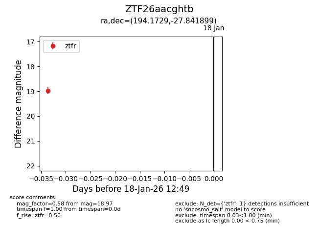
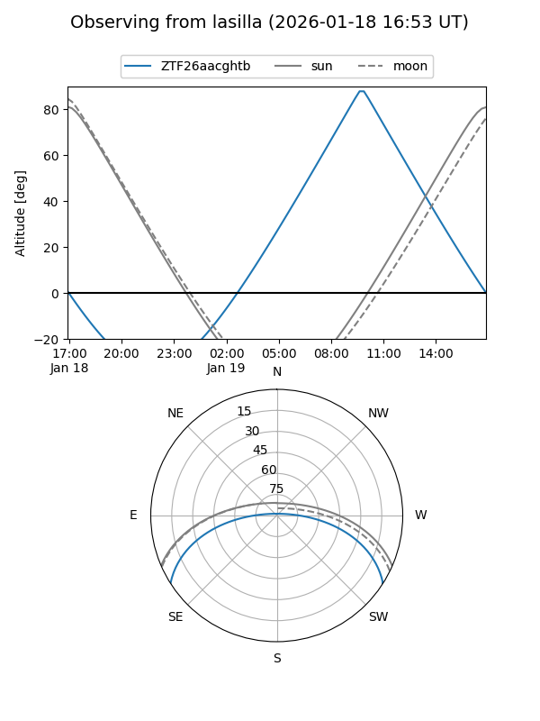
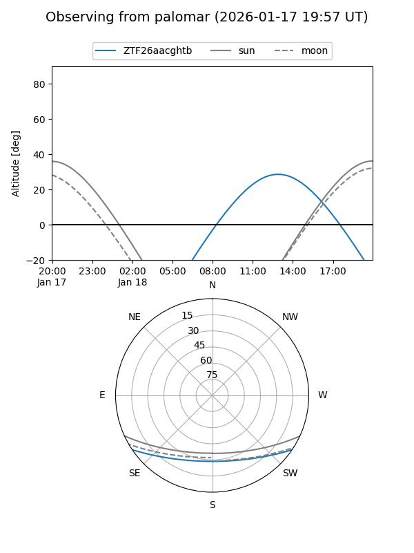

ZTF26aacghtb
Target ZTF26aacghtb at 2026-01-18 12:50
Aliases and brokers:
FINK: link
Lasair: link
ALeRCE: link
alt names
ZTF26aacghtb (ztf,fink_ztf)
Coordinates:
equatorial (ra, dec) = 194.1729,-27.84190
equatorial (HMS+DMS) = 12:56:41.48,-27:50:30.84
galactic (l, b) = (304.3499,+35.01538)
Flags:
Photometry:
last ztfr=18.97
1 ztfr detections
Lightcurve

Visibility


Additional plots